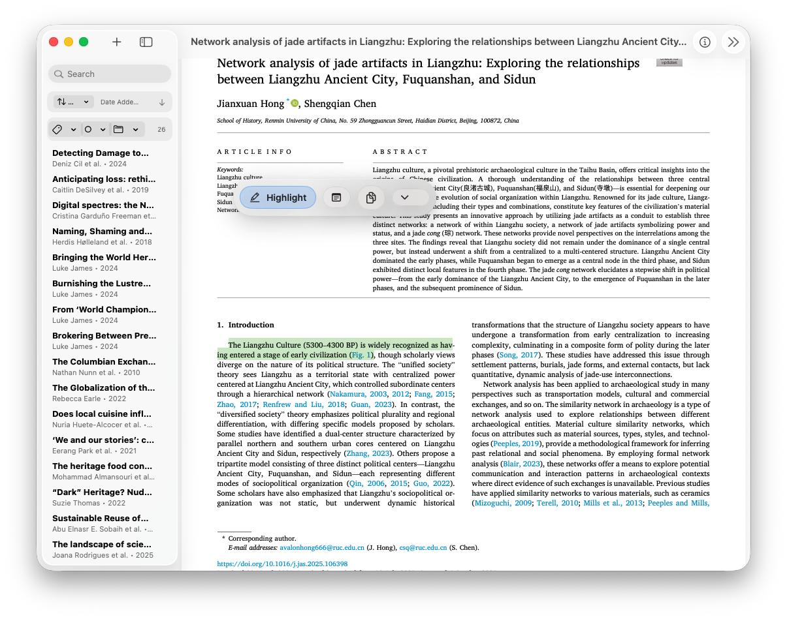
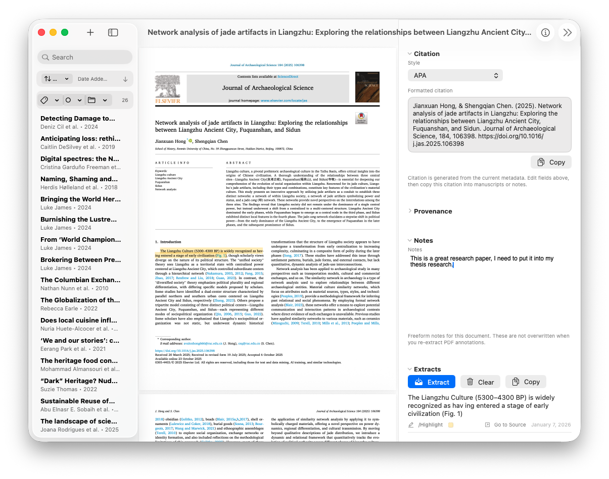

PDF-first
The document stays visually central.
Annotation-aware
Highlight what matters while context stays visible.
Workflow-friendly
Designed to feed notes, synthesis, and drafting.
StrataRead
A reading app for the part of research where ideas are still forming.
StrataRead focuses on the everyday scholarly loop: import a paper, read closely, mark the evidence, then move the useful pieces into your note and writing system.
Keep the library visible without overwhelming the page
A compact sidebar keeps papers reachable while the PDF remains the main surface.
Make highlights part of a larger argument
Use annotations as stepping stones toward notes, outlines, and manuscript sections.
Private, native, and calm
No third-party analytics or advertising frameworks; data stays local or in iCloud if enabled.

Reading and review
Designed for scanning a library and settling into a paper.
The interface gives you quick access to papers, metadata, and annotation controls while preserving the feeling of reading a document rather than operating a database.

Use StrataRead as the reading surface and StrataWrite as the writing surface.
Together, the apps keep the line from source to note to manuscript short enough that you can stay inside the argument.